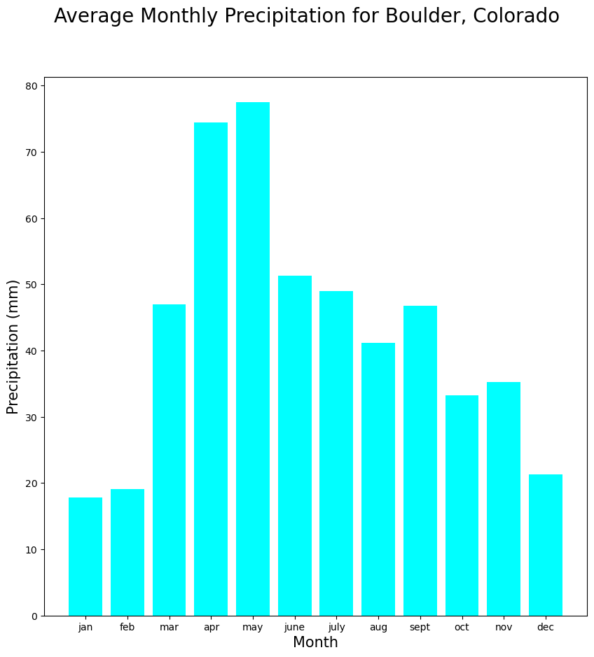

{% include toc title=”On This Page” icon=”file-text” %}
# Creating lists needed for activity
boulder_precip_months = [
"jan",
"feb",
"mar",
"apr",
"may",
"june",
"july",
"aug",
"sept",
"oct",
"nov",
"dec",
]
boulder_precip_inches = [
0.70,
0.75,
1.85,
2.93,
3.05,
2.02,
1.93,
1.62,
1.84,
1.31,
1.39,
0.84,
]
# Modifying the list as needed
boulder_precip_mm = boulder_precip_inches.copy()
boulder_precip_mm[0] *= 25.4
boulder_precip_mm[1] *= 25.4
boulder_precip_mm[2] *= 25.4
boulder_precip_mm[3] *= 25.4
boulder_precip_mm[4] *= 25.4
boulder_precip_mm[5] *= 25.4
boulder_precip_mm[6] *= 25.4
boulder_precip_mm[7] *= 25.4
boulder_precip_mm[8] *= 25.4
boulder_precip_mm[9] *= 25.4
boulder_precip_mm[10] *= 25.4
boulder_precip_mm[11] *= 25.4
# Creating the list of lists
all_boulder_data = [boulder_precip_months, boulder_precip_mm]
# Import necessary plot package
import matplotlib.pyplot as plt
# Plot monthly precipitation values
fig, ax = plt.subplots(figsize=(10, 10))
ax.bar(all_boulder_data[0],
all_boulder_data[1],
color="aqua")
fig.suptitle("Average Monthly Precipitation for Boulder, Colorado", fontsize=20)
ax.set_xlabel("Month", fontsize=15)
ax.set_ylabel("Precipitation (mm)", fontsize=15)
plt.show()

boulder_precip_mm = [i * 25.4 for i in boulder_precip_inches]